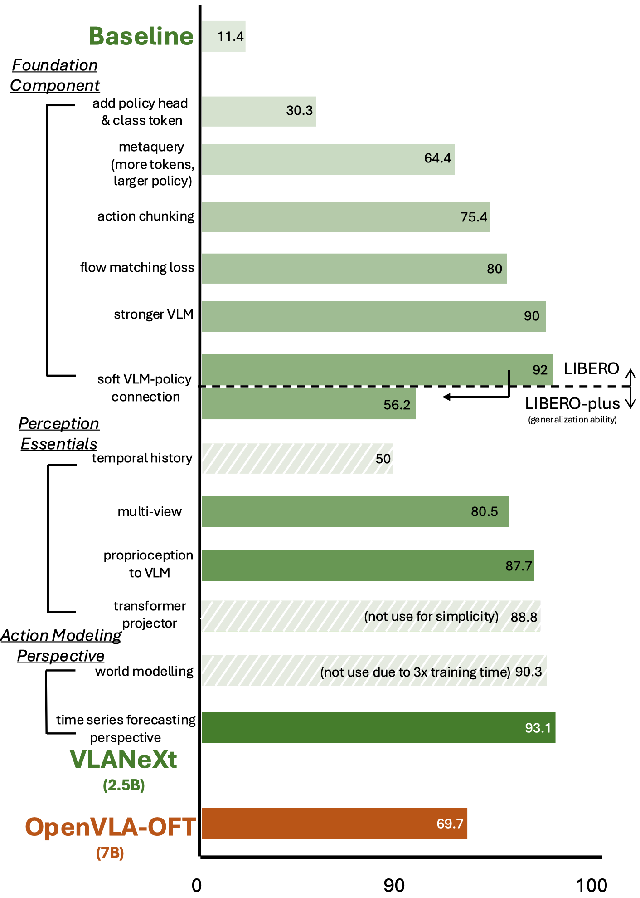
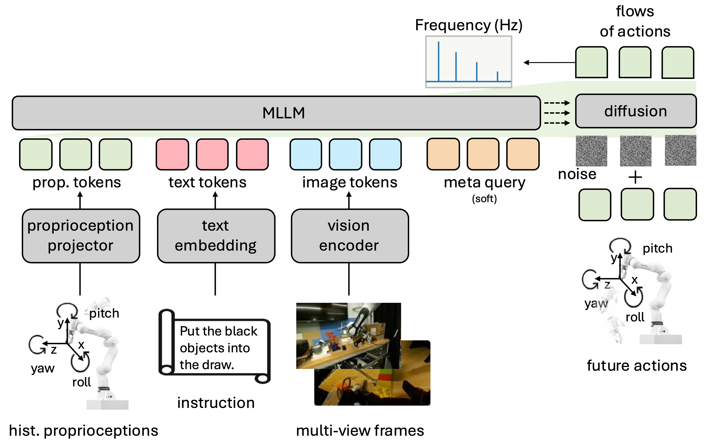
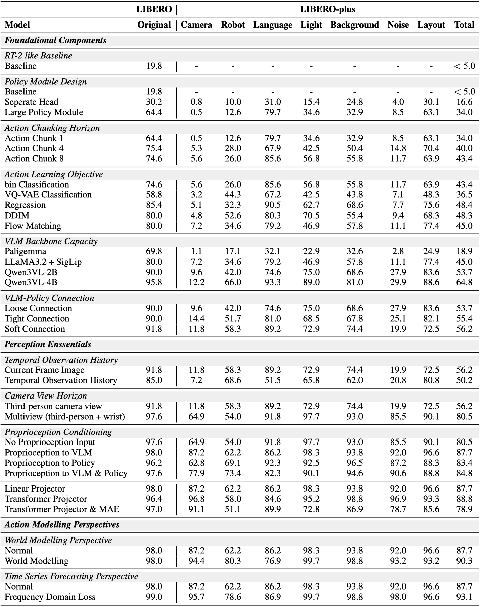
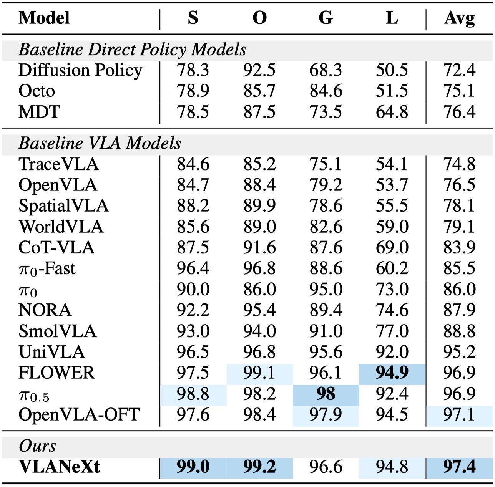
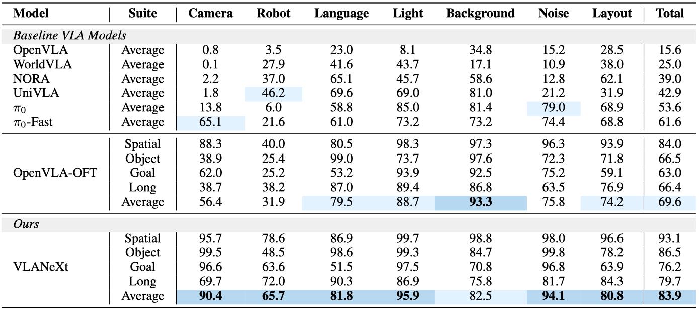

clean table (single arm)
Following the rise of large foundation models, Vision–Language–Action models (VLAs) emerged, leveraging strong visual and language understanding for general-purpose policy learning. Yet, the current VLA landscape remains fragmented and exploratory. Although many groups have proposed their own VLA models, inconsistencies in training protocols and evaluation settings make it difficult to identify which design choices truly matter. To bring structure to this evolving space, we reexamine the VLA design space under a unified framework and evaluation setup. Starting from a simple VLA baseline similar to RT-2 and OpenVLA, we systematically dissect design choices along three dimensions: foundational components, perception essentials, and action modelling perspectives. From this study, we distill 12 key findings that together form a practical recipe for building strong VLA models. The outcome of this exploration is a simple yet effective model, VLANeXt. VLANeXt outperforms prior state-of-the-art methods on the LIBERO and LIBERO-plus benchmarks and demonstrates strong generalization in real-world experiments. We will release a unified, easy-to-use codebase that serves as a common platform for the community to reproduce our findings, explore the design space, and build new VLA variants on top of a shared foundation.
We re-examine the VLA design space through a systematic study along three key dimensions: foundational components, perception essentials, and action modelling. This structured exploration yields 12 findings that together form a practical recipe for building strong VLA models.

The resulting VLANeXt framework integrates the best practices identified from our exploration into a unified architecture.

We conduct extensive ablations across 12 design spaces. The table below summarizes each finding with the variants in each space, serving as a complehensive recipe for practitioners.

VLANeXt achieves state-of-the-art performance. It outperforms strong baselines, demonstrating its versatility across diverse manipulation scenarios with varying task configurations.

LIBERO-Plus introduces seven categories of systematic perturbations, background, camera, language, layout, lighting, noise, and robot changes, to stress-test policy robustness. VLANeXt maintains consistently high success rates across all perturbation types, while competing methods exhibit performance degradation, validating the robustness of our design choices.

We deploy VLANeXt on physical robot platforms to validate real-world robustness. The model successfully executes a variety of everyday manipulation tasks, including table cleaning, drawer manipulation, bimanual table cleaning, and bimanual lifting, on both single-arm and bimanual-arm setups, demonstrating reliable performance.
clean table (single arm)
clean table (single arm)
open drawer and place object (single arm)
open drawer and place object (single arm)
bimanual clean table (bimanual arms)
lifting (bimanual arms)
Qualitative rollouts from the LIBERO benchmark illustrate VLANeXt's ability to follow diverse natural language instructions and perform precise manipulation across varied environments and object configurations.
pick up the black bowl between the plate and the ramekin and place it on the plate
pick up the tomato sauce and place it in the basket
open the middle drawer of the cabinet
put both the alphabet soup and the tomato sauce in the basket
Qualitative rollouts from LIBERO-Plus demonstrate VLANeXt's robustness, where the model complete the task "pick up the black bowl next to the plate and place it on the plate" under seven distinct perturbation categories. Despite significant environmental changes, the model maintains stable and accurate manipulation.
background perturbation
camera perturbation
language perturbation
layout perturbation
light perturbation
noise perturbation
robot perturbation
@inproceedings{wu2026vlanext,
title={VLANeXt: Recipes for Building Strong VLA Models},
author={Xiao-Ming Wu and Bin Fan and Kang Liao and Jian-Jian Jiang and Runze Yang and Yihang Luo and Zhonghua Wu and Wei-Shi Zheng and Chen Change Loy},
booktitle={ICML},
year={2026},
}